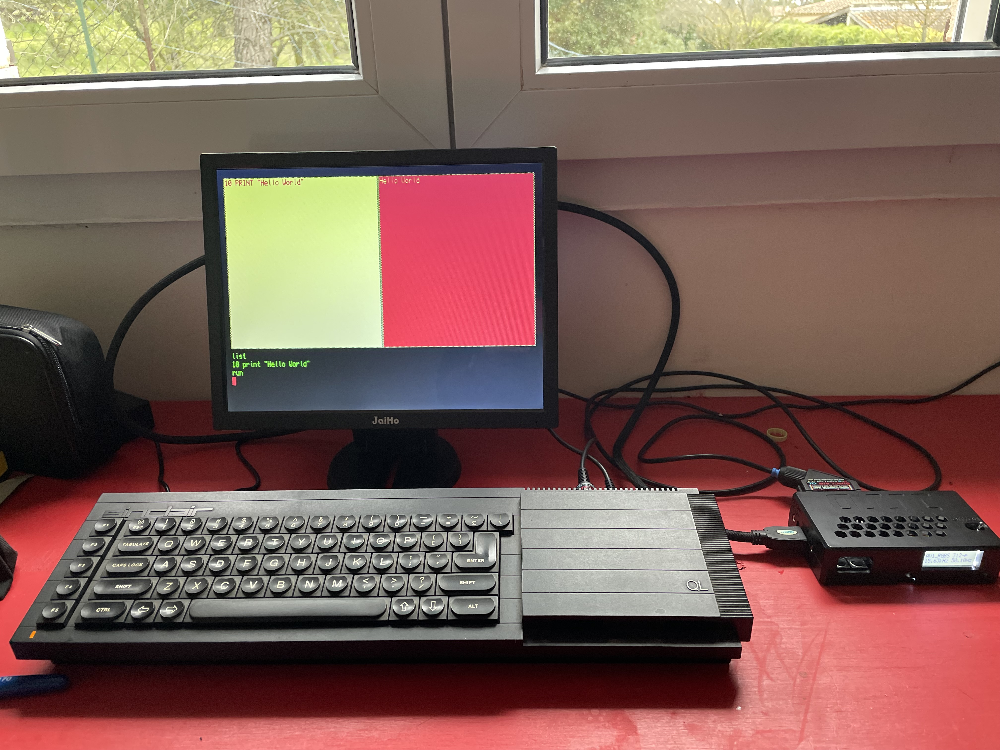

1985
Acheté à crédit étudiant durant ma maîtrise de Mathématiques à Luminy. Motorola 68008, même jeu d'instructions que le 68000.
J'y ai appris l'assembleur 68000, le C, le Lisp. Codé mes Bresenham à la main. Rédigé ma lettre de motivation pour le DEA du LRI à Orsay.
Et étudié la ROM du QL grâce à un livre — un désassemblage commenté, écrit par un passionné — perdu depuis malheureusement. Passionnant surtout dans les parties de gestion de lecture des micro drive et l'implementation du multi tache préemptif, très formateur ce fut!
2025

Nappe de clavier refaite par la communauté. Microdrives remplacés par un lecteur microSD simulant les micro-drive. Et un onéreux excellent convertisseur Peritel vers HDMI, qui sert aussi pour les consoles de jeux depuis la PS1, respecte parfaitement le pixel art